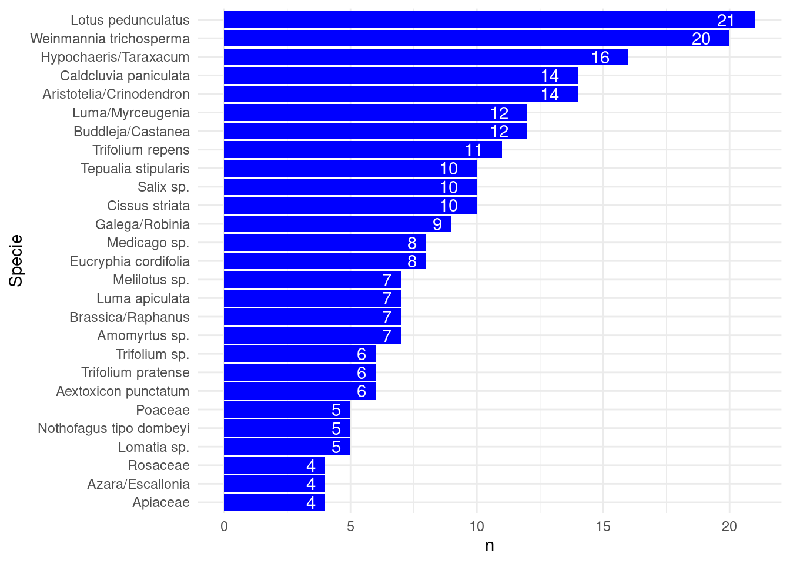

Reporte Mieles
1 Análisis de componentes principales PCA
Importante
Este análisis de PCA no es tan relevante en la medida que se hayan identificado las especies monoflorales más importantes, tal como se muestra en la sección Section 5.2
2 Análisis con todos los datos sin diferenciar por origen botanico
2.1 Fenoles vs radiación
2.2 FRAP vs radiación

3 DPPH vs radiación
4 Gráficos de correlación sin irradación
4.1 Fenoles vs FRAP
4.2 Fenoles vs DPPH
4.3 FRAP vs DPPH
5 Análisis de mieles monoflorales (> 45%)
(Sólo se muestran aquellas especies presentes en más de tres muestras)
5.1 ¿Cuáles son las especies más frecuentes en las muestras?
\(n\) es el número de muestras que contienen la especie, sin considerar el porcentaje de la composición. Por ejemplo, de las 24 muestras: 21 de ellas contienen la especie Lotus pedunculatus

5.2 ¿Cuáles son las principales especies monoflorales presentes en las muestras?
5.3 Análisis de variables en las muestras monoflorales
5.3.1 Análisis de radiación sobre Fenoles en base a origen botánico
(No se consideran muestras 17, 34 y la especie Aristotelia/Crinodendron)